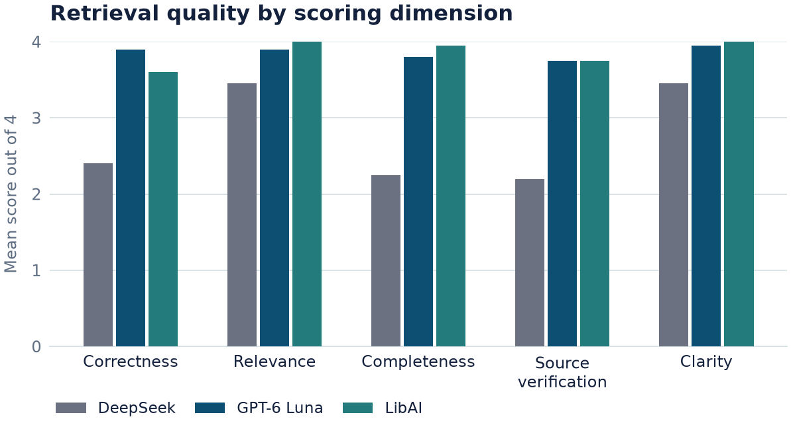
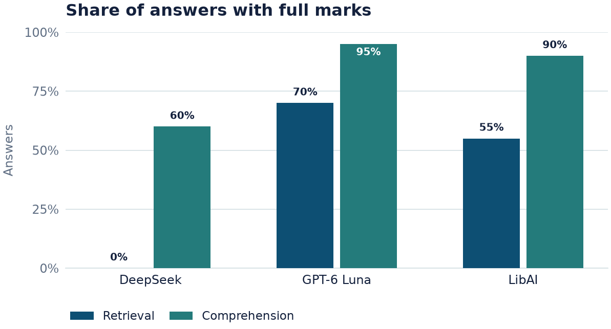

Users and context
Postgraduate literature work
Students use AI to find, screen, compare and understand academic literature. Alongside LibAI, general-purpose generative AI tools outside the university are also common alternatives.
ADS401 Evaluation Methods and Statistics Group J
We surveyed XJTLU postgraduates about LibAI adoption, non-use reasons and desired capabilities. Those findings informed a comparison of LibAI, DeepSeek and GPT-6 Luna on literature retrieval and source understanding, using 107 eligible survey responses and 20 task participants.
Source verification and accuracy were the leading improvement priorities: 54 of 107 respondents (50.5%) chose one of them as their top priority. LibAI also scored strongly on source verifiability in the task comparison, making traceability a strength to preserve and refine. Interview feedback commonly called for faster responses; this is a reported user need, considered alongside the task results. See the findings and recommendations.
01 / Project at a glance
This project examines whether XJTLU postgraduate students use LibAI for literature work, what they want from a library AI service, and how LibAI performs on common literature tasks.
We first surveyed 107 postgraduates about LibAI use, non-use reasons, AI-supported literature tasks and improvement priorities. We then compared LibAI with ChatGPT (GPT-6 Luna configuration) and DeepSeek on literature retrieval and abstract understanding, and used interview feedback to add context to the results.
Respondents placed particular value on reliable, verifiable sources and accuracy. In the retrieval task, LibAI matched GPT-6 Luna on mean quality and source verifiability. Interviewees mentioned speed, while generally prioritising reliability; response time is therefore a service need to investigate alongside quality.
40.2%
had ever used LibAI (43 of 107)
59.8%
had never used LibAI (64 of 107)
50.5%
selected source verification or accuracy as their top improvement
19.30 / 20
mean retrieval score for both LibAI and GPT-6 Luna
02 / Problem, motivation and questions
Users and context
Students use AI to find, screen, compare and understand academic literature. Alongside LibAI, general-purpose generative AI tools outside the university are also common alternatives.
Evaluation problem
Survey responses show who has used LibAI and why some students have not tried it.
Improvement question
Respondents highlighted source reliability, answer accuracy, resource coverage and the practical experience of using LibAI.
Research questions
03 / Background and related work
AI-assisted literature work combines retrieval and interpretation. A retrieval tool should find papers that meet the task requirements, return accurate sources and provide details students can verify. A reading tool should preserve the source content without adding unsupported information or omitting important details.
Walters and Wilder examined citations in literature reviews generated by ChatGPT-3.5 and GPT-4. They found fabricated references alongside real references containing substantive errors. This shows why researchers should verify that cited works exist and that their bibliographic metadata are accurate [1]. Their findings concern earlier model versions and do not establish LibAI's current error rate.
In four evidence-synthesis case studies, Lau and Golder found that Elicit had higher precision but lower average sensitivity than the original reviews. They concluded that, in those cases, Elicit could supplement but not replace comprehensive searching [2]. This supports evaluating both task fit and source verification.
A 2026 feasibility study of Elicit's data extraction found that accuracy and reproducibility varied across prompts and test articles, and recommended manual checking [3]. We therefore combine blind output scoring with user ratings. A response may appear useful while omitting a key result or adding unsupported information.
These studies inform our evaluation measures but do not predict LibAI's performance. This study examines whether XJTLU postgraduates know about and choose the library tool, what functions they want, and how it performs on tasks drawn from their reported literature workflow.
04 / Study design and methods
The questionnaire moved from students’ general AI use to their specific experience with LibAI. It asked which AI tools they used for literature-related work and which tasks they used them for; whether they knew about or had used LibAI; and, based on their experience, what factors encouraged or hindered use. It also asked respondents to rate desired functions and select the improvement they would prioritise first. Responses about common literature tasks informed task selection, while the other AI tools reported by respondents informed comparator selection. The bilingual questionnaire targeted XJTLU postgraduate students. Of 124 raw submissions, six did not consent and 11 were not XJTLU postgraduates, leaving 107 eligible responses.
Findings are descriptive and exploratory. The survey used non-probability convenience/snowball recruitment.
Three questionnaire findings shaped the task choice, comparison systems and scoring focus.
Survey question · Q6
Among 97 recent AI users, literature search/screening and reading/summarising were each selected by 61 respondents.
Experiment design
The two task areas represent common literature work reported in the questionnaire.
Survey question · Q7
ChatGPT was named by 32 respondents and DeepSeek by 31; two named LibAI (n=97).
Experiment design
The experiment used GPT-6 Luna as the ChatGPT configuration, alongside DeepSeek and LibAI.
Survey question · Q28
Verifiable sources were selected by 28 respondents and accuracy by 26 (n=107).
Experiment design
The rubric assessed source verifiability, correctness, relevance, completeness and clarity.
The survey determined what to examine; the experiment compared outputs on those selected tasks and criteria.
To assess the common literature tasks identified in the survey, 20 XJTLU postgraduates used LibAI, DeepSeek and GPT-6 Luna (ChatGPT configuration) to complete a literature-retrieval task and a fixed abstract-comprehension task. Each participant completed six trials, producing 120 answers for scoring. Participants were interviewed after the tasks. The results briefly compare the three systems on these tasks.
Participants recorded each system’s specific response. The group then conducted a second blind review of the recorded answers to cross-check the results. Reviewers assessed correctness, relevance, completeness, source verifiability and clarity/actionability using the 0–20 scoring scale.
All 20 participants’ task answers were included in output scoring. Complete seven-point satisfaction and expectation ratings were available for all 20 participants and analysed as within-participant responses. Participation in the questionnaire and experiment required informed consent, and recording required separate consent. This page reports aggregate findings only and does not display raw responses or identifying information.
05 / Survey findings
These results use the latest cleaned questionnaire data. Of 124 raw submissions, 107 met the eligibility requirements. AI-task questions were answered by 97 respondents who had recently used AI; questions about reasons for non-use were answered by 64 respondents who had never used LibAI.
Survey results
Each chart shows its denominator. AI task use is among recent AI users; non-use reasons are among respondents who had never used LibAI.


RQ1 / Use and awareness
Of 107 respondents, 31 were current LibAI users (29.0%), 12 had used it previously but not in the past six months (11.2%), and 64 had never used it (59.8%). Thus, 43 respondents (40.2%) had tried LibAI, while 81 (75.7%) had heard of it. Among 97 recent AI users, literature search or screening and reading or summarising were each reported by 61 respondents (62.9%).
Most-used AI tool
Among the 97 recent AI users, 32 named ChatGPT as their main AI tool, 31 named DeepSeek, and two named LibAI. This indicates that students use AI for literature work, while LibAI is rarely their main tool.
RQ2 / Perceptions among LibAI users
Among current and former LibAI users, ratings of LibAI’s help across literature tasks were moderately positive, with item means from 3.60 to 3.83 out of 5 (valid n=41–42 per item). Clear, well-structured responses received the highest mean (3.83/5). Help with judging a paper’s relevance and with understanding or summarising papers each averaged 3.76/5. Ratings of usability were closer to the scale midpoint: ease of learning averaged 3.14/5, clarity of guidance 3.26/5, and access convenience 3.32/5.
Source checking averaged 3.05/5 and fit with existing literature workflows 2.90/5 (n=40 for each). In a separate item, users’ concern about insufficient sources or evidence averaged 3.88/5 (n=43). Together, these responses point to workflow fit and verifiable evidence as areas needing attention.
Valid responses
There were 43 current or former LibAI users in the cleaned sample. Item-level valid responses varied from 40 to 43 because some users skipped individual questions or marked them not applicable.
RQ3 / Barriers and priorities
Among 64 respondents who had never used LibAI, 30 said external AI already met their literature needs (46.9%). Twenty-four did not know which academic tasks LibAI could help with (37.5%), 24 lacked an opportunity to try it (37.5%), and 22 did not know how to access it (34.4%). Sixteen (25.0%) reported concerns about accuracy or sources.
Among 43 current or former users, commonly reported limitations included insufficient database or resource coverage (18, 41.9%), irrelevant or inaccurate results (17, 39.5%), and external AI already meeting their needs (17, 39.5%). Sixteen users (37.2%) also reported difficulty with complex or mixed-language requests, while 15 (34.9%) reported insufficient source or evidence information.
Improvement priorities
As a single top priority, 28 respondents selected verifiable sources and evidence (26.2%), and 26 selected accuracy and fewer fabricated answers (24.3%). Together, these accounted for 54 of 107 choices (50.5%). Database coverage followed with 13 choices (12.1%).
06 / Task experiment
Across the same literature-retrieval and abstract-comprehension tasks, the systems showed different patterns. LibAI and GPT-6 Luna both averaged 19.30/20 on retrieval, above DeepSeek's 13.75/20; LibAI also matched GPT-6 Luna on source verifiability (3.75/4). Comprehension scores clustered near full marks, with no significant pairwise differences. This supports a comparison on the tested tasks, not a general ranking across topics or users.
20 XJTLU postgraduate students took part.
Each participant did a literature-retrieval task and an abstract-comprehension task with LibAI, DeepSeek and GPT-6 Luna.
Participants recorded the systems’ responses and rated satisfaction and expectation; this produced 120 task answers.
Reviewers scored answer quality against the rubric, then results were compared across systems and tasks.
Interview feedback was used separately to explain user needs, including source checking and response speed.
| System | Retrieval mean (SD) | Retrieval full marks | Comprehension mean (SD) | Comprehension full marks |
|---|---|---|---|---|
| DeepSeek | 13.75 (1.83) | 0 / 20 | 19.50 (0.69) | 12 / 20 |
| GPT-6 Luna (ChatGPT) | 19.30 (1.63) | 14 / 20 | 19.90 (0.45) | 19 / 20 |
| LibAI | 19.30 (0.86) | 11 / 20 | 19.85 (0.49) | 18 / 20 |
Task evidence
Blind quality scores cover all 20 participants. Complete seven-point experience ratings are available for all 20 participants.




Retrieval
The overall within-participant comparison differed across systems (Friedman Q=33.74, Kendall's W=.84, adjusted p<.001). LibAI and GPT-6 Luna each averaged 5.55 points above DeepSeek; both paired comparisons had adjusted p<.001. LibAI and GPT-6 Luna tied in 11 of 20 participant comparisons (adjusted p=1.000). Their source-verifiability means were both 3.75/4; DeepSeek's was 2.20/4.
Comprehension
Forty-nine of 60 answers received full marks. The overall test detected a smaller system difference (Friedman Q=8.00, W=.20, adjusted p=.0119), but none of the pairwise comparisons was significant. This ceiling limits the task's ability to distinguish systems.
User experience
All 20 participants completed the seven-point ratings. On retrieval, satisfaction averaged 4.35/7 for DeepSeek, 6.00/7 for GPT-6 Luna and 6.00/7 for LibAI; the within-participant difference was significant (Friedman Q=28.62, Kendall’s W=.72, p<.001), with no difference between GPT-6 Luna and LibAI after pairwise adjustment. Retrieval expectation ratings were 3.90, 4.85 and 5.60/7 respectively (Q=23.23, W=.58, p<.001). On comprehension, satisfaction averaged 5.95, 6.30 and 6.40/7 (Q=5.70, W=.14, p=.058); expectation ratings averaged 4.80, 5.15 and 5.55/7 (Q=9.25, W=.23, p=.010). Satisfaction was high and similar across systems for comprehension; the clearest expectation difference was between DeepSeek and LibAI (Holm-adjusted p=.014). These user ratings are reported separately from blind output-quality scores.
Interview feedback
Interview feedback helps explain the ratings. Participants repeatedly emphasised that literature results must be verifiable, describing checks of DOI, authors, titles and journal records. They also mentioned waiting during repeated tasks. In one interview round, a participant selected response speed as the priority; in other rounds, source verification and accuracy took priority. Together, these comments support improving the waiting experience while preserving reliable, traceable sources. Since response time was not systematically measured, the interviews describe user experience rather than showing which system was faster.
07 / Discussion and recommendations
The survey records what students want; the task comparison shows performance on two controlled tasks. Sources and accuracy led survey priorities, yet LibAI scored strongly on source verifiability and retrieval quality in the tested topic. Make this capability visible and validate it more broadly.
Priority 1 / Source verification and quality
Fifty-four of 107 respondents (50.5%) selected source verification or accuracy as their top improvement priority: 28 chose verifiable sources and 26 chose accuracy. In the retrieval task, LibAI averaged 19.30/20 for quality and 3.75/4 for source verifiability, matching GPT-6 Luna. Preserve this tested strength and make source trails easier to inspect.
Priority 2 / Response speed
The interview records are genuine, including the five interviews previously labelled as simulated. They mention waiting and response speed; one repeated-round interview record explicitly selected speed as its top improvement. Survey respondents still most often prioritised source verification or accuracy (54/107), and interviewees also emphasised reliability. We did not systematically record response times, so this recommendation is to improve the waiting experience while protecting verifiable answer quality, not a claim that LibAI was slower than the other systems.
Priority 3 / Coverage across disciplines
Thirteen respondents selected coverage as their top improvement, while 18 of 43 current or former LibAI users (41.9%) reported insufficient database coverage as a limitation. The single-topic experiment cannot test cross-disciplinary coverage. Run a multi-discipline audit and report relevant records missed as well as those retrieved.
Priority 4 / Onboarding and access
Among 64 never-users, 22 (34.4%) did not know how to access LibAI, 24 (37.5%) did not know suitable tasks and 24 (37.5%) had not had a chance to try it. Thirty (46.9%) said external AI already met their needs. Provide a clear entry path and task-based examples that show LibAI's library-specific value.
08 / Transparency and references
This evaluation draws on three sources: a survey with 107 eligible responses from 124 raw submissions; a task experiment with 20 XJTLU postgraduate participants completing six trials each across three systems, producing 120 scored answers (20 retrieval and 20 comprehension answers per system); and interview transcripts providing qualitative feedback on user experience and service needs. The five interviews previously labelled as simulated are included as genuine records, following the study team’s clarification. Blind output-quality scores and complete seven-point satisfaction and expectation ratings use all 20 participants; the two measures are analysed separately.
This page contains aggregate results only. The cleaned workbook, raw survey export, consent forms, original interview recordings and trial-level scores are not included here because of privacy and file-size constraints.
Participation was voluntary and consent-based; experiment recording required separate consent. The supplied materials do not show an ethics approval reference or retention schedule; add verified details before submission.
Blind output-quality scores and complete seven-point experience ratings both use the 20-person experiment sample; the measures are analysed separately.